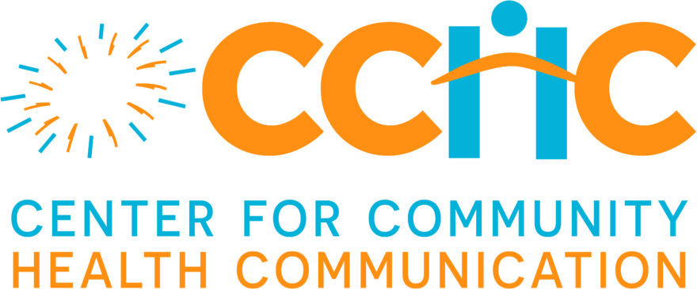

Hiểu đúng về sức khỏe,
từ nguồn chính thống.
Nhận thông tin chính xác, cập nhật từ các chuyên gia y tế.
Không thay thế thăm khám — nhưng giúp bạn biết khi nào cần đi khám.
Đối tác chiến lược
Đơn vị đồng hành
Nguồn chính thống
Tổng hội & Chính sách y tế
Chuyển tải khuyến cáo của Tổng hội Y học Việt Nam và các hội chuyên khoa thành viên; giải mã văn bản chính sách thành nội dung dân hiểu — trung lập, trích đúng số hiệu, kèm link văn bản gốc.

Ảnh minh hoạ (Unsplash)
Hội Tim mạch học VNHội thành viên · Xem hồ sơ →
Hội Nội tiết – ĐTĐ VNHội thành viên · Xem hồ sơ →
Cập nhật
Tin tức & Sự kiện
Tin hoạt động, nội dung mới và lịch sự kiện có thể đăng ký.
Tin mới

Tim mạch
Tăng huyết áp ở người trẻ: những dấu hiệu dễ bỏ qua
18/07/2026 · Chuyên gia Hội Tim mạch học Việt Nam phản biện
Hoạt động
CCHC phối hợp Tổng hội tổ chức tọa đàm phòng chống đột quỵ
20/07/2026 · Tóm tắt và tài liệu đã được đăng tải
Chính sách
Giải mã quy định mới về khám sức khỏe định kỳ
12/07/2026 · Trích số hiệu văn bản, link gốc, giọng trung lậpSự kiện sắp tới
12Th8
Tọa đàm: Sống khỏe cùng bệnh đái tháo đường
Trực tuyến · Phối hợp Hội Nội tiết & Đái tháo đường Việt Nam27Th8
Hội thảo báo chí: Truyền thông y tế có trách nhiệm
Hà Nội · Dành cho nhà báo, biên tập viên09Th9
Diễn đàn chuyên gia: Cập nhật hướng dẫn phòng đột quỵ
Trực tuyến · Có cấp tài liệu sau sự kiệnẢnh trong trang là ảnh minh hoạ (Unsplash)
Tri thức đã thẩm định
Chủ đề sức khỏe nổi bật
Hồ sơ chủ đề đã thẩm định, gắn nhãn mức bằng chứng M1–M4.

M1 · Bằng chứng mạnh
Tăng huyết áp
Dấu hiệu dễ bỏ qua và những con số cần nhớ.

M1 · Bằng chứng mạnh
Đái tháo đường típ 2
Ai cần tầm soát, khi nào và bằng xét nghiệm gì.

M2 · Bằng chứng khá
Đột quỵ
Nhận biết sớm theo quy tắc F.A.S.T, xử trí kịp thời.

M2 · Bằng chứng khá
Tiêm chủng
Những mũi người lớn hay bỏ quên và lịch nhắc lại.
Đối tác & Tác động
Cách CCHC hợp tác — và giới hạn của mỗi đối tác
Mọi hợp tác thể hiện rõ vai trò, đóng góp, kết quả và ranh giới quyền can thiệp. Đối tác đóng góp nguồn lực và tri thức — quyền công bố và kết luận chuyên môn thuộc về CCHC.
Viện – trường – cơ sở y tế
Doanh nghiệp / nhà tài trợ
Đối tác nền tảng (Chitta)
Vì sức khỏe cộng đồng, dựa trên bằng chứng. Về CCHC →
Cập nhật mới nhất
Tin tức & Sự kiện
Tin hoạt động CCHC · tin Tổng hội và hội chuyên khoa · lịch sự kiện · thông cáo · tóm tắt.
Tin hoạt động

Tổng hội
CCHC phối hợp Tổng hội tổ chức tọa đàm phòng chống đột quỵ
20/07/2026 · Có tóm tắt & tài liệu
Hội chuyên khoa
Phối hợp Hội Nội tiết – ĐTĐ Việt Nam chuyển tải nội dung tầm soát đái tháo đường (minh hoạ)
15/07/2026 · Đã biên tập thành nội dung cộng đồng
Thông cáo
Thông cáo: Chiến dịch truyền thông tiêm chủng mùa hè 2026
02/07/2026 · Tải không cần đăng nhập
Tổng hội
CCHC phối hợp truyền thông phòng chống bệnh không lây nhiễm
12/07/2026 · Có nội dung cộng đồng
Hoạt động
Chuỗi nội dung chăm sóc sức khỏe tâm thần cộng đồng
08/07/2026 · Nội dung minh hoạLịch sự kiện
12Th8
Tọa đàm: Sống khỏe cùng bệnh đái tháo đường
Trực tuyến · Hội Nội tiết & ĐTĐ VN · Chi tiết sự kiện →27Th8
Hội thảo báo chí: Truyền thông y tế có trách nhiệm
Hà Nội · Chi tiết sự kiện →09Th9
Diễn đàn chuyên gia: Cập nhật hướng dẫn phòng đột quỵ
Trực tuyến · Có cấp tài liệu sau sự kiện · Chi tiết sự kiện →
Dành cho tổ chức
Đồng tổ chức / Tài trợ sự kiện
Viện, trường, doanh nghiệp muốn đồng hành cùng CCHC trong hội thảo, tọa đàm cộng đồng — công khai tài trợ, giữ độc lập nội dung.
Tóm tắt sự kiện đã diễn ra

Hội thảo phòng chống tăng huyết áp cộng đồng (06/2026)
Chương trình truyền thông sức khỏe cộng đồng, phối hợp chuyên gia tim mạch. Kèm báo cáo kết quả truyền thông.
Kết quả
320
người tham dự
người tham dự
4
tài liệu tải về
tài liệu tải về
12
bài truyền thông
bài truyền thông

Diễn đàn phòng chống đột quỵ cộng đồng (05/2026)
Chia sẻ cách nhận biết sớm và xử trí đột quỵ theo quy tắc F.A.S.T. Xem bài liên quan →
Kết quả
210
người tham dự
người tham dự
3
tài liệu tải về
tài liệu tải về
8
bài truyền thông
bài truyền thông
Tri thức sức khỏe
Thư viện tri thức đã thẩm định
Lọc theo chủ đề và mức bằng chứng M1–M4.
Mức bằng chứng: M1 Bằng chứng mạnh → M2 Bằng chứng khá → M3 Tham khảo → M4 Định hướng chung.
Tăng huyết áp ở người trẻ: những dấu hiệu dễ bỏ qua
Phản biện: PGS.TS Nguyễn Văn An · Cập nhật 18/07/2026
Đọc bài →
Tầm soát đái tháo đường típ 2: ai cần làm và khi nào
Phản biện: TS.BS Lê Thị Bình · Cập nhật 15/07/2026
Đọc bài →
Nhận biết sớm dấu hiệu đột quỵ theo quy tắc F.A.S.T (quy tắc nhận biết đột quỵ)
Phản biện: PGS.TS Nguyễn Văn An · Cập nhật 01/07/2026
Đọc bài →

Ăn giảm muối thế nào cho đúng trong bữa cơm Việt?
Phản biện: GS.TS Phạm Quốc Hùng · Cập nhật 12/07/2026
Đọc bài →

BMI nói lên điều gì và không nói điều gì?
Phản biện: TS.BS Đỗ Thị Mai · Cập nhật 08/07/2026
Đọc bài →
Người lớn có cần tiêm chủng không? Những mũi hay bị quên
Phản biện: BS.CKII Trần Minh Đức · Cập nhật 10/07/2026
Đọc bài →

Ngủ bao nhiêu là đủ và làm sao để ngủ ngon hơn?
Phản biện: BS.CKII Hoàng Văn Sơn · Cập nhật 06/07/2026
Đọc bài →

Căng thẳng kéo dài ảnh hưởng đến sức khỏe như thế nào?
Phản biện: BS.CKI Vũ Hoàng Nam · Cập nhật 04/07/2026
Đọc bài →

Bệnh không lây nhiễm là gì và phòng ngừa thế nào?
Phản biện: BS.CKII Trần Minh Đức · Cập nhật 03/07/2026
Đọc bài →

Sơ cấp cứu cơ bản: vài kỹ năng ai cũng nên biết
Phản biện: BS.CKII Hoàng Văn Sơn · Cập nhật 30/06/2026
Đọc bài →
Tri thức sức khỏe › Tim mạch
Chủ đề: Tăng huyết áp
Tăng huyết áp ở người trẻ: những dấu hiệu dễ bỏ qua
Cỡ chữ
M1 · Bằng chứng mạnh
Chi tiết thẩm định ▾
Nội dung này mang tính giáo dục, không thay thế thăm khám và tư vấn y tế cá nhân. Khi nào cần đi khám →
Trả lời ngắn
Huyết áp từ 140/90 mmHg trở lên khi đo tại cơ sở y tế được coi là tăng huyết áp. Ở người trẻ, bệnh thường không có triệu chứng rõ, nên chỉ phát hiện được khi đo định kỳ.
Không phải trường hợp nào cũng cần đi cấp cứu. Nhưng nếu chỉ số rất cao và kèm triệu chứng, cần xử trí ngay — xem danh sách dấu hiệu ngay bên dưới.
Gọi cấp cứu 115 ngay nếu có bất kỳ dấu hiệu nào dưới đây. Không chờ theo dõi thêm.
- Huyết áp ≥180/120 mmHg kèm triệu chứng — đau đầu, đau ngực, khó thở hoặc mờ mắt.
- Đau đầu dữ dội, đột ngột — cơn đau chưa từng gặp, nhất là kèm nôn hoặc lơ mơ.
- Méo miệng, yếu một bên, nói khó — dấu hiệu đột quỵ, cần cấp cứu càng sớm càng tốt.
- Đau ngực dữ dội, tức nặng ngực — lan ra tay, vai hoặc hàm, kéo dài trên vài phút.
Xem đầy đủ dấu hiệu cần đi khám →

Ảnh minh hoạ (Unsplash)
Tăng huyết áp thường được xem là "bệnh của người già", nhưng ngày càng nhiều người dưới 40 tuổi được phát hiện có chỉ số huyết áp cao. Điều đáng lưu ý là ở giai đoạn đầu, bệnh hầu như không có triệu chứng rõ ràng, khiến nhiều người trẻ chủ quan.
Vì sao dễ bỏ qua?
Các dấu hiệu như đau đầu âm ỉ, mệt mỏi, chóng mặt thoáng qua thường bị quy cho căng thẳng công việc hoặc thiếu ngủ. Chỉ khi đo huyết áp định kỳ, nhiều người mới tình cờ phát hiện chỉ số vượt ngưỡng.
Những con số cần nhớ
Theo hướng dẫn chuyên môn hiện hành, huyết áp từ 140/90 mmHg trở lên (đo tại cơ sở y tế) được coi là tăng huyết áp. Việc đo lặp lại ở nhiều thời điểm giúp tránh chẩn đoán nhầm do lo lắng nhất thời.
Công khai tài trợ
Nội dung này có tài trợ bởi Quỹ Vì Sức khỏe Cộng đồng (minh hoạ). Nhà tài trợ không tham gia biên soạn và không can thiệp kết luận chuyên môn. Xem chính sách tài trợ →
Nguồn tham khảo
- WHO — Hypertension (minh hoạ)
- Bộ Y tế — Hướng dẫn chẩn đoán & điều trị tăng huyết áp (minh hoạ)
- Hội Tim mạch học Việt Nam — Khuyến cáo (minh hoạ)
Danh mục nguồn minh hoạ trong bản demo — liên kết không điều hướng thật.
Nội dung này mang tính giáo dục, không thay thế thăm khám và tư vấn y tế cá nhân.
Nội dung do Ban Nội dung CCHC biên soạn, PGS.TS Nguyễn Văn An thẩm định chuyên môn. Xem hồ sơ thẩm định.
Nguồn chính thống
Tổng hội & Chính sách y tế
Nguồn chính danh của CCHC — cầu nối tri thức chính thống tới cộng đồng.
Tổng hội Y học Việt Nam
Vai trò, hoạt động nổi bật và liên kết chương trình giữa Tổng hội Y học Việt Nam với CCHC. CCHC là cánh tay truyền thông, chuyển tải khuyến cáo chuyên môn của Tổng hội và các hội thành viên tới cộng đồng qua kênh có kiểm duyệt.
Hồ sơ hội chuyên khoa
TM
Hội Tim mạch học Việt Nam
Hội thành viên Tổng hội Y học Việt Nam · nội dung minh hoạ.
Xem hồ sơ →
NT
Hội Nội tiết – ĐTĐ Việt Nam
Hội thành viên Tổng hội Y học Việt Nam · nội dung minh hoạ.
Xem hồ sơ →
DP
Hội Y học Dự phòng Việt Nam
Hội thành viên Tổng hội Y học Việt Nam · nội dung minh hoạ.
Xem hồ sơ →
HH
Hội Hô hấp Việt Nam
Hội thành viên Tổng hội Y học Việt Nam · nội dung minh hoạ.
Xem hồ sơ →
TK
Hội Thần kinh học Việt Nam
Hội thành viên Tổng hội Y học Việt Nam · nội dung minh hoạ.
Xem hồ sơ →
NK
Hội Nhi khoa Việt Nam
Hội thành viên Tổng hội Y học Việt Nam · nội dung minh hoạ.
Xem hồ sơ →
Giải mã chính sách
Diễn giải văn bản luật thành nội dung dân hiểu — trung lập, trích đúng số hiệu, kèm link văn bản gốc. Mọi bài đi qua quy trình biên soạn 8 bước.
Chính sách
Giải mã quy định về khám sức khỏe định kỳ cho người lao động
Trích Thông tư số 00/2026/TT-BYT (ví dụ minh hoạ) · Ngày hiệu lực 01/03/2026 (minh hoạ) · Xem văn bản gốcChính sách
Chính sách tiêm chủng mở rộng: những điểm cần biết năm 2026
Trích Quyết định số 00/QĐ-BYT (ví dụ minh hoạ) · Ngày hiệu lực 15/01/2026 (minh hoạ) · Xem văn bản gốcChính sách
Định hướng phòng chống bệnh không lây nhiễm đến năm 2030
Trích Kế hoạch số 00/KH-BYT (ví dụ minh hoạ) · Ngày hiệu lực 10/02/2026 (minh hoạ) · Xem văn bản gốcĐối thoại chính sách
CCHC làm cầu nối đối thoại chính sách y tế: kết nối cơ quan quản lý, hội chuyên khoa, chuyên gia và cộng đồng để trao đổi hai chiều — đưa tiếng nói khoa học vào quá trình xây dựng chính sách, và diễn giải chính sách trở lại cho người dân dễ hiểu.
Bàn tròn chuyên gia
Tổ chức tọa đàm, bàn tròn để chuyên gia góp ý dự thảo chính sách y tế.
Phản hồi & góp ý
Tổng hợp góp ý chuyên môn từ mạng lưới, gửi cơ quan soạn thảo — trung lập, có dẫn nguồn.
Diễn giải cho cộng đồng
Chuyển chính sách đã ban hành thành nội dung dân hiểu, trích đúng số hiệu.
Mạng lưới chuyên gia
Thư viện chuyên gia
Lọc theo chuyên khoa · nhận phỏng vấn · ngôn ngữ.
NA
PGS.TS Nguyễn Văn An
Tim mạch · Nhận phỏng vấn8 bài đã thẩm định · Hội Tim mạch học Việt Nam.
Xem hồ sơ →
LB
TS.BS Lê Thị Bình
Nội tiết · Nhận phỏng vấn6 bài đã thẩm định · Hội Nội tiết & ĐTĐ Việt Nam.
Xem hồ sơ →
TĐ
BS.CKII Trần Minh Đức
Y học dự phòngQH
GS.TS Phạm Quốc Hùng
Tim mạch · Nhận phỏng vấn9 bài đã thẩm định · Hội Tim mạch học Việt Nam.
Xem hồ sơ →
ĐM
TS.BS Đỗ Thị Mai
Nội tiết · Nhận phỏng vấn7 bài đã thẩm định · Hội Nội tiết & ĐTĐ Việt Nam.
Xem hồ sơ →
VN
BS.CKI Vũ Hoàng Nam
Y học dự phòng4 bài đã thẩm định · Hội Y học Dự phòng Việt Nam.
Xem hồ sơ →
LH
PGS.TS Lê Quang Huy
Tim mạch6 bài đã thẩm định · Hội Tim mạch học Việt Nam.
Xem hồ sơ →
NL
ThS.BS Nguyễn Thị Lan
Nội tiết · Nhận phỏng vấn5 bài đã thẩm định · Hội Nội tiết & ĐTĐ Việt Nam.
Xem hồ sơ →
HS
BS.CKII Hoàng Văn Sơn
Y học dự phòng · Nhận phỏng vấn8 bài đã thẩm định · Hội Y học Dự phòng Việt Nam.
Xem hồ sơ →
NA
PGS.TS Nguyễn Văn An
Chuyên khoa Tim mạch · Hội Tim mạch học Việt Nam · Nhận phỏng vấn báo chíHọc hàm, học vị & đơn vị công tác
Phó Giáo sư, Tiến sĩ Y học, chuyên ngành Tim mạch. Công tác tại một cơ sở y tế minh hoạ.
Công khai xung đột lợi ích (COI)
Không có xung đột lợi ích thương mại liên quan đến các nội dung đã thẩm định. Mọi tài trợ (nếu có) được công khai tại từng bài viết theo chính sách của CCHC.
Bài đã thẩm định
- Tăng huyết áp ở người trẻ: những dấu hiệu dễ bỏ qua M1
- Danh sách tự cập nhật khi có bài mới được thẩm định.
Trung tâm báo chí
Nguồn chính thống, phản hồi nhanh
Thông cáo, media kit, chuyên gia nhận phỏng vấn — lấy trong 2 phút.
Thông cáo mới nhất
Chiến dịch truyền thông tiêm chủng mùa hè 2026
02/07/2026 · Tải PDF không cần đăng nhậpCCHC công bố quy trình biên soạn 8 bước phiên bản mới
18/06/2026 · Tải PDF không cần đăng nhậpMedia kit & chuyên gia
Media kit
Logo, bộ nhận diện, ảnh tư liệu, giới thiệu tổ chức — tải trọn gói.
Chuyên gia nhận phỏng vấn
Lọc theo chuyên khoa, ngôn ngữ, tình trạng nhận phỏng vấn.
Minh bạch & Trách nhiệm
Cách chúng tôi làm ra mỗi nội dung
Mọi nội dung trên trang đều dẫn về đây.
Chính sách biên tập
Mọi nội dung của CCHC tuân theo nguyên tắc biên tập nhất quán: dẫn nguồn chính thống, ngôn ngữ dễ hiểu, tách bạch đưa tin với quan điểm, không quảng cáo sản phẩm trong nội dung chuyên môn, và luôn ghi rõ chuyên gia phản biện. Quy trình biên soạn 8 bước dưới đây hiện thực hóa các nguyên tắc này.
Quy trình biên soạn 8 bước
1
Đề xuất chủ đềTừ nhu cầu cộng đồng, hội chuyên khoa hoặc chính sách mới.2
Bản thảoBan nội dung soạn thảo, dẫn nguồn đầy đủ.3
Biên tập khoa họcRà soát tính chính xác và ngôn ngữ dễ hiểu.4
Phản biện chuyên giaChuyên gia có ghi nhận tên thẩm định chuyên môn.5
Rà soát pháp lýKiểm tra tuân thủ quy định và miễn trừ.6
Phê duyệt xuất bảnNgười chịu trách nhiệm cuối phê duyệt.7
Xuất bảnGắn dải thông tin tin cậy, mã tra cứu, và công khai tài trợ (nếu có).8
Theo dõi & đính chínhCập nhật, đính chính công khai khi cần.Medical disclaimer
Nội dung này mang tính giáo dục, không thay thế thăm khám và tư vấn y tế cá nhân.
Câu miễn trừ trên xuất hiện ở mọi bài viết của CCHC. Nội dung trên trang nhằm cung cấp kiến thức chung; khi có triệu chứng hoặc lo ngại về sức khỏe, hãy liên hệ cơ sở y tế. Khi nào cần đi khám →
Nhật ký đính chính
Bài "Chế độ ăn giảm muối" — cập nhật số liệu khuyến nghị lượng muối/ngày
Đã đính chính
Bài "BMI nói lên điều gì" — làm rõ giới hạn áp dụng cho vận động viên
Đang xử lý
Phản hồi bạn đọc về liều tiêm nhắc — đang chờ chuyên gia xác minh
Đã tiếp nhận
Phản ánh về "ngưỡng huyết áp cao" — đã đối chiếu hướng dẫn hiện hành, nội dung chính xác nên giữ nguyên
Không đủ căn cứ / Đã thẩm định — không đổi
Bốn trạng thái: Đã đính chính (đã sửa và công khai) · Đang xử lý (đang rà soát để chỉnh) · Đã tiếp nhận (đã ghi nhận, chờ xác minh) · Không đủ căn cứ / Đã thẩm định — không đổi (đã kiểm chứng, nội dung đúng nên giữ nguyên).
Minh bạch & Trách nhiệm › Chính sách tài trợ
Chính sách tài trợ
"Chúng tôi nhận tài trợ nội dung, không bán quan điểm."
| Nhà tài trợ ĐƯỢC gì | Giới hạn — điều KHÔNG được |
|---|---|
| Được ghi nhận công khai tại các nội dung/sự kiện có tài trợ. | Không tham gia biên soạn, không sửa kết luận chuyên môn. |
| Được nhận báo cáo hiệu quả truyền thông (tóm tắt sự kiện, số liệu). | Không được chọn chuyên gia phản biện hay chi phối quy trình biên soạn 8 bước. |
| Được đồng hành các chương trình vì sức khỏe cộng đồng. | Không gắn quảng cáo sản phẩm trong nội dung chuyên môn. |
Dịch vụ chuyên môn
Đồng hành chuyên môn & Hợp tác KHCN cùng tổ chức
CCHC đồng hành với viện, trường, doanh nghiệp và cơ quan về truyền thông sức khỏe, tư vấn khung nội dung và hỗ trợ khoa học – công nghệ (KHCN) — luôn trên nền tảng độc lập chuyên môn. Mọi hợp tác đặt kết luận chuyên môn và quy trình biên soạn 8 bước lên trên yêu cầu thương mại.
| CCHC cung cấp | Giới hạn độc lập — điều KHÔNG đổi |
|---|---|
| Tư vấn khung truyền thông sức khỏe cho tổ chức. | Kết luận chuyên môn không mua được. |
| Đồng hành chuyên môn / KHCN: thiết kế chương trình, hỗ trợ nghiên cứu ứng dụng. | CCHC không chứng thực, không quảng cáo sản phẩm trong nội dung chuyên môn. |
| Phản biện độc lập theo yêu cầu tổ chức: đánh giá tài liệu / claim chuyên môn. | Mọi hợp tác đều công khai xung đột lợi ích (COI). |
| Đào tạo / tập huấn theo hình thức liên kết. | Phản biện dịch vụ TÁCH BẠCH khỏi phản biện biên tập nội dung CCHC. |
"Kết luận chuyên môn của CCHC không nằm trong phạm vi mua bán."
Hai loại phản biện — không trộn lẫn
Phản biện biên tập
Miễn phí. Là governance nội dung nội bộ của CCHC, hiển thị trên dải tin cậy mỗi bài viết. Gắn với quy trình biên soạn 8 bước.
Phản biện dịch vụ
Theo yêu cầu tổ chức, có hợp đồng, công khai COI. Là dịch vụ chuyên môn tách bạch — không can thiệp vào phản biện biên tập nội dung CCHC.
Hai loại phản biện độc lập với nhau: phản biện biên tập bảo chứng nội dung CCHC; phản biện dịch vụ phục vụ tổ chức theo hợp đồng. Không dùng cái này để tác động cái kia.
Phạm vi dịch vụ cụ thể (gói, hình thức, phạm vi cam kết) đang chờ BGĐ + Legal phê duyệt
Dịch vụ & Cộng đồng
Tư vấn – Phản biện – Cộng đồng
CCHC đồng hành chuyên môn với tổ chức và triển khai chương trình cộng đồng — trên nền tảng độc lập chuyên môn. Trang này gom bốn lối vào: tư vấn truyền thông sức khỏe, phản biện chuyên môn, chương trình cộng đồng và gửi brief hợp tác.
① Tư vấn truyền thông
② Phản biện chuyên môn
③ Chương trình cộng đồng
④ Gửi brief
Nhóm A — Dịch vụ chuyên môn
Dịch vụ chuyên môn cho tổ chức
Hoạt động có thu phí, đặt trong khung governance: kết luận chuyên môn và quy trình biên soạn 8 bước luôn đứng trên yêu cầu thương mại.
Phạm vi dịch vụ cụ thể (gói, hình thức, phạm vi cam kết) đang chờ BGĐ + Legal phê duyệt
① Tư vấn truyền thông sức khỏe
Tư vấn khung nội dung và chiến lược truyền thông sức khỏe cho tổ chức: định hình thông điệp, kiểm soát chất lượng chuyên môn, gắn với chuẩn minh bạch của CCHC.
② Phản biện chuyên môn
Đánh giá độc lập tài liệu / claim chuyên môn theo yêu cầu tổ chức, có hợp đồng và công khai xung đột lợi ích (COI).
Hai loại phản biện — không trộn lẫn
Phản biện biên tập
Miễn phí. Là governance nội dung nội bộ của CCHC, hiển thị trên dải tin cậy mỗi bài viết. Gắn với quy trình biên soạn 8 bước.
Phản biện dịch vụ
Theo yêu cầu tổ chức, có hợp đồng, công khai COI. Là dịch vụ chuyên môn tách bạch — không can thiệp vào phản biện biên tập nội dung CCHC.
Hai loại phản biện độc lập với nhau: phản biện biên tập bảo chứng nội dung CCHC; phản biện dịch vụ phục vụ tổ chức theo hợp đồng. Không dùng cái này để tác động cái kia. Kết luận chuyên môn không nằm trong phạm vi mua bán.
| CCHC cung cấp | Giới hạn độc lập — điều KHÔNG đổi |
|---|---|
| Tư vấn khung truyền thông sức khỏe cho tổ chức. | Kết luận chuyên môn không mua được. |
| Đồng hành chuyên môn / KHCN: thiết kế chương trình, hỗ trợ nghiên cứu ứng dụng. | CCHC không chứng thực, không quảng cáo sản phẩm trong nội dung chuyên môn. |
| Phản biện độc lập theo yêu cầu tổ chức: đánh giá tài liệu / claim chuyên môn. | Mọi hợp tác đều công khai xung đột lợi ích (COI). |
| Đào tạo / tập huấn theo hình thức liên kết. | Phản biện dịch vụ TÁCH BẠCH khỏi phản biện biên tập nội dung CCHC. |
Nhóm B — Cộng đồng
Chương trình cộng đồng — phi lợi nhuận
Đây là hoạt động vì cộng đồng, không phải dịch vụ thương mại. Phân khu riêng để không lẫn với dịch vụ có thu phí ở Nhóm A.
③ Chương trình cộng đồng
Tọa đàm, sàng lọc, truyền thông cộng đồng cùng mạng lưới Tổng hội và các hội chuyên khoa. Hoạt động phi lợi nhuận, hướng tới sức khỏe cộng đồng.
④ Gửi brief
Tổ chức muốn gửi yêu cầu hợp tác (tư vấn, phản biện, chương trình) có thể gửi brief gọn — CCHC phản hồi và trao đổi phạm vi phù hợp.
Xem thêm: Cách CCHC hợp tác & giới hạn quyền can thiệp · COI & minh bạch
Đối tác & Tác động
Cách CCHC hợp tác — và giới hạn của mỗi đối tác
Mỗi quan hệ hợp tác đều thể hiện rõ bốn điều: vai trò, đóng góp, kết quả và giới hạn quyền can thiệp. Đây là bảng minh bạch — không phải trang quảng cáo đối tác. Dù đối tác đóng góp nguồn lực hay tri thức, CCHC vẫn giữ trách nhiệm cuối cùng về nội dung: quyền công bố và kết luận chuyên môn thuộc về CCHC.
1 · Viện – trường – cơ sở y tế
| Vai trò | Đóng góp | Kết quả | Giới hạn quyền can thiệp |
|---|---|---|---|
| Đối tác chuyên môn & nghiên cứu. | Chuyên gia, dữ liệu, phản biện khoa học. | Bài đồng công bố, chương trình chuyên môn chung. | Không quyết định biên tập cuối; nguồn được ghi rõ, tách bạch với kết luận của CCHC. |
2 · Doanh nghiệp / nhà tài trợ
| Vai trò | Đóng góp | Kết quả | Giới hạn quyền can thiệp |
|---|---|---|---|
| Tài trợ chương trình / nội dung cộng đồng. | Nguồn lực, phạm vi tiếp cận, đồng hành sự kiện. | Chương trình cộng đồng, báo cáo tác động truyền thông. | KHÔNG duyệt, không sửa kết luận chuyên môn; công khai xung đột lợi ích (COI); không quảng cáo trá hình. |
3 · Đối tác nền tảng (Chitta & đối tác tri thức)
| Vai trò | Đóng góp | Kết quả | Giới hạn quyền can thiệp |
|---|---|---|---|
| Cung cấp nền tảng & tri thức nguồn. | Hạ tầng, dữ liệu tri thức, năng lực phân phối. | Phân phối, mở rộng tiếp cận nội dung tới cộng đồng. | KHÔNG có quyền công bố nội dung CCHC — quyền publish tách bạch, thuộc về CCHC. |
"Đối tác đóng góp nguồn lực và tri thức — quyền công bố và kết luận chuyên môn thuộc về CCHC."
Liên hệ / Tham gia
Chọn hình thức phù hợp với bạn
Sáu biểu mẫu, mỗi biểu mẫu có Consent Box theo Nghị định 13/2023/NĐ-CP.
① Chuyên gia cộng tác
2 bước · chọn Cá nhân / Tổ chức.
Mở biểu mẫu →② Đề xuất nghiên cứu
Dành cho viện, trường, cơ sở y tế.
Mở biểu mẫu →③ Hợp tác tài trợ
Có xác nhận đã đọc chính sách tài trợ.
Mở biểu mẫu →④ Báo chí
Có ô thời hạn bắt buộc + kênh nhanh.
Mở biểu mẫu →⑤ Phản hồi sai sót
Tự điền sẵn đường dẫn bài · Phản hồi trong 48 giờ.
Mở biểu mẫu →⑥ Cộng đồng
Đăng ký sự kiện / bản tin.
Mở biểu mẫu →Đã nhận yêu cầu của bạn
Cảm ơn bạn. Đề nghị của bạn đã vào hàng xử lý — đây là 3 bước tiếp theo.
- 1Xác nhậnBạn nhận email xác nhận tự động kèm mã yêu cầu CCHC-REQ-2026-0087 (mã minh hoạ) ngay bây giờ.
- 2Phân côngBộ phận phụ trách tiếp nhận và rà soát trong 48 giờ.
- 3Phản hồiChúng tôi trả lời qua email/điện thoại trước hạn đã hẹn.
Cần gấp? Liên hệ trực tiếp: lienhe@cchc.org.vn · 024 3936 5127 (số minh hoạ).
Sắp ra mắt
Chuyên trang đang được xây dựng
Chuyên trang đang được xây dựng — bạn vẫn có thể liên hệ ngay.
Cảnh báo · Dấu hiệu cần đi khám
Khi nào cần đi khám?
Cỡ chữ
Trực thuộc Tổng hội Y học VN · Không quảng cáo sản phẩm
Gọi cấp cứu 115 ngay nếu có bất kỳ dấu hiệu nguy hiểm nào dưới đây. Không chờ theo dõi thêm; nếu có thể, nhờ người khác đưa đi hoặc gọi hỗ trợ.
Dấu hiệu cần cấp cứu ngay (red-flag)
- Đau ngực dữ dội, tức nặng ngực — lan ra tay, vai hoặc hàm, kéo dài trên vài phút — có thể là dấu hiệu nhồi máu cơ tim.
- Méo miệng, yếu/liệt một bên, nói khó (F.A.S.T) — dấu hiệu đột quỵ — cần cấp cứu càng sớm càng tốt để cứu não.
- Khó thở nặng, tím môi/đầu chi — thở gấp, không nói trọn câu, da tái tím.
- Đau đầu dữ dội, đột ngột — cơn đau chưa từng gặp, nhất là kèm nôn, mờ mắt hoặc lơ mơ.
- Co giật, lơ mơ, mất ý thức — gọi hỏi không đáp, ngất, lú lẫn đột ngột.
- Huyết áp rất cao kèm triệu chứng — ví dụ ≥180/120 mmHg kèm đau đầu, đau ngực, khó thở, mờ mắt.
- Chảy máu không cầm, chấn thương nặng — mất máu nhiều, vết thương lớn, tai nạn nghiêm trọng.
Nên đi khám sớm (trong 24–48 giờ)
- Sốt cao liên tục, không hạ sau khi đã dùng thuốc hạ sốt.
- Đau bụng tăng dần, nôn nhiều, không ăn uống được.
- Chỉ số huyết áp hoặc đường huyết cao bất thường khi tự đo tại nhà.
- Triệu chứng kéo dài, lặp lại hoặc không rõ nguyên nhân.
Đây là hướng dẫn chung, không thay thế thăm khám và tư vấn y tế cá nhân. Khi nghi ngờ, hãy liên hệ cơ sở y tế gần nhất.
Giới thiệu › Về chúng tôi
Về chúng tôi
Tư cách pháp lý
CCHC — Trung tâm Truyền thông và Chăm sóc Sức khỏe Cộng đồng — là đơn vị trực thuộc Tổng hội Y học Việt Nam, hoạt động trong lĩnh vực truyền thông y tế vì cộng đồng, phi thương mại. Mọi nội dung tuân thủ quy định pháp luật về thông tin y tế và bảo vệ dữ liệu cá nhân.
Quan hệ với Tổng hội Y học Việt Nam
CCHC là cánh tay truyền thông của Tổng hội, chuyển tải khuyến cáo chuyên môn của Tổng hội và các hội chuyên khoa thành viên tới cộng đồng qua kênh có kiểm duyệt. CCHC giữ trách nhiệm về nội dung; các hội cung cấp chuyên môn và phản biện.
Tầm nhìn – Sứ mệnh
Tầm nhìn: trở thành nguồn phát ngôn gốc, đáng tin cậy về sức khỏe cho cộng đồng — nơi mọi người tìm đến trước khi hoang mang vì thông tin trôi nổi. Sứ mệnh: chuyển tri thức y học chính thống thành nội dung dễ hiểu, có kiểm chứng và ghi rõ nguồn, giúp người dân hiểu đúng và biết khi nào cần đi khám.
Hội đồng khoa học
Nội dung được thẩm định bởi hội đồng khoa học gồm chuyên gia đến từ các hội chuyên khoa. Mỗi bài xuất bản đều ghi rõ tên chuyên gia phản biện và đi qua quy trình biên soạn 8 bước.
Năng lực cốt lõi
Truyền thông sức khỏe
Biến khuyến cáo chuyên môn thành nội dung dân hiểu, đúng và an toàn.
Mạng lưới chuyên gia
Kết nối chuyên gia các hội chuyên khoa để phản biện, ghi rõ tên.
Quy trình kiểm chứng
Quy trình biên soạn 8 bước, dẫn nguồn và đính chính công khai.
Minh bạch & trách nhiệm
Công khai tài trợ, xung đột lợi ích; AI hỗ trợ, con người chịu trách nhiệm cuối.
Minh bạch & Trách nhiệm › COI & AI có kiểm soát
Xung đột lợi ích (COI) & AI có kiểm soát
Xung đột lợi ích (COI)
Chuyên gia phản biện kê khai xung đột lợi ích trước khi tham gia thẩm định. Mọi tài trợ liên quan tới một nội dung (nếu có) được công khai ngay tại bài viết đó. Chuyên gia có xung đột lợi ích trực tiếp sẽ không tham gia phản biện nội dung liên quan.
Nguyên tắc
Nhà tài trợ không được chọn chuyên gia phản biện, không can thiệp kết luận chuyên môn và không chi phối quy trình biên soạn 8 bước.
AI có kiểm soát
AI có thể hỗ trợ tra cứu, gợi ý cấu trúc hoặc rà lỗi ngôn ngữ, nhưng con người chịu trách nhiệm cuối cùng. AI không thay thế phản biện của chuyên gia và không tự quyết định xuất bản. Mọi bài vẫn đi qua đầy đủ quy trình biên soạn 8 bước.
Tổng hội & Chính sách › Hồ sơ hội chuyên khoa
Hội chuyên khoa
Giới thiệu
Hội chuyên khoa là thành viên của Tổng hội Y học Việt Nam, tập hợp các chuyên gia đầu ngành. Hội phối hợp với CCHC để chuyển tải khuyến cáo chuyên môn thành nội dung cộng đồng dễ hiểu, qua kênh có kiểm duyệt.
Khuyến cáo đã ban hành
- Khuyến cáo cập nhật về chẩn đoán và điều trị (minh hoạ).
- Hướng dẫn thực hành lâm sàng cho tuyến cơ sở (minh hoạ).
- Tài liệu truyền thông cho cộng đồng (minh hoạ).
Đầu mối phối hợp
Liên hệ qua đầu mối tổ chức của CCHC để đề xuất phối hợp truyền thông hoặc chuyển tải khuyến cáo.
Tổng hội & Chính sách › Văn bản gốc
Văn bản gốc (bản trích)
Trích nội dung
Đây là bản trích minh hoạ của văn bản gốc, dùng để đối chiếu với nội dung đã được CCHC diễn giải. Trong bản triển khai thật, khu vực này hiển thị trích dẫn nguyên văn kèm liên kết tới nguồn công bố chính thức.
CCHC chỉ diễn giải, không thay đổi nội dung pháp lý của văn bản. Khi có sai khác, văn bản gốc là căn cứ duy nhất.
Tri thức sức khỏe › Nội tiết
Chủ đề: Đái tháo đường
Tầm soát đái tháo đường típ 2: ai cần làm và khi nào
Cỡ chữ
M1 · Bằng chứng mạnh
Chi tiết thẩm định ▾
Nội dung này mang tính giáo dục, không thay thế thăm khám và tư vấn y tế cá nhân. Khi nào cần đi khám →
Đái tháo đường típ 2 thường tiến triển âm thầm trong nhiều năm trước khi được phát hiện. Tầm soát giúp phát hiện sớm, khi việc can thiệp bằng lối sống còn mang lại hiệu quả cao.
Ai nên tầm soát?
Người từ 40 tuổi trở lên, hoặc trẻ hơn nhưng có yếu tố nguy cơ như thừa cân, ít vận động, tiền sử gia đình, tăng huyết áp… nên trao đổi với bác sĩ về việc xét nghiệm đường huyết định kỳ.
Tầm soát bằng cách nào?
Các xét nghiệm thường dùng gồm đường huyết lúc đói và HbA1c. Bác sĩ sẽ chỉ định phù hợp và diễn giải kết quả theo bối cảnh của từng người.
Nguồn tham khảo
- WHO — Diabetes (minh hoạ)
- Bộ Y tế — Hướng dẫn chẩn đoán & điều trị đái tháo đường típ 2 (minh hoạ)
- Hội Nội tiết – Đái tháo đường Việt Nam — Khuyến cáo (minh hoạ)
Danh mục nguồn minh hoạ trong bản demo — liên kết không điều hướng thật.
Nội dung này mang tính giáo dục, không thay thế thăm khám và tư vấn y tế cá nhân.
Nội dung do Ban Nội dung CCHC biên soạn, TS.BS Lê Thị Bình thẩm định chuyên môn. Xem hồ sơ thẩm định.
Tri thức sức khỏe › Tim mạch
Chủ đề: Đột quỵ
Nhận biết sớm dấu hiệu đột quỵ theo quy tắc F.A.S.T (quy tắc nhận biết đột quỵ)
Cỡ chữ
M2 · Bằng chứng khá
Chi tiết thẩm định ▾
Nội dung này mang tính giáo dục, không thay thế thăm khám và tư vấn y tế cá nhân. Khi nào cần đi khám →
Gọi cấp cứu 115 ngay khi nghi ngờ đột quỵ. Thời gian là não — can thiệp càng sớm, cơ hội hồi phục càng cao.
Đột quỵ có thể xảy ra đột ngột. Nhận biết sớm và gọi cấp cứu kịp thời giúp giảm di chứng. Quy tắc F.A.S.T giúp ghi nhớ các dấu hiệu chính.
F.A.S.T là gì?
- F — Face (Mặt): mặt méo, lệch một bên khi cười.
- A — Arm (Tay): yếu hoặc liệt một bên tay, không giơ đều được.
- S — Speech (Lời nói): nói khó, nói ngọng, không rõ chữ.
- T — Time (Thời gian): gọi cấp cứu 115 ngay, ghi nhớ thời điểm khởi phát.
Nguồn tham khảo
- WHO — Stroke (minh hoạ)
- Bộ Y tế — Hướng dẫn xử trí đột quỵ (minh hoạ)
- Hội Thần kinh học Việt Nam — Khuyến cáo (minh hoạ)
Danh mục nguồn minh hoạ trong bản demo — liên kết không điều hướng thật.
Nội dung này mang tính giáo dục, không thay thế thăm khám và tư vấn y tế cá nhân.
Nội dung do Ban Nội dung CCHC biên soạn, PGS.TS Nguyễn Văn An thẩm định chuyên môn. Xem hồ sơ thẩm định.
Tri thức sức khỏe › Dinh dưỡng
Dự phòng
Ăn giảm muối thế nào cho đúng trong bữa cơm Việt?
Cỡ chữ
M3 · Tham khảo
Chi tiết thẩm định ▾
Nội dung này mang tính giáo dục, không thay thế thăm khám và tư vấn y tế cá nhân. Khi nào cần đi khám →
Ăn thừa muối có liên quan đến tăng huyết áp và bệnh tim mạch. Tổ chức Y tế Thế giới (WHO) khuyến nghị người trưởng thành dùng dưới 5 g muối mỗi ngày (khoảng một thìa cà phê), nhưng khẩu phần của nhiều người Việt thường cao hơn mức này.
Muối "ẩn" nằm ở đâu?
Phần lớn muối đến từ nước mắm, nước tương, mì chính, hạt nêm, dưa cà muối, thực phẩm chế biến sẵn và các món kho, canh nêm đậm. Vì vậy, lượng muối thực tế ăn vào thường cao hơn ta tưởng.
Giảm muối thế nào cho dễ?
Hãy nêm nhạt dần để vị giác quen; hạn chế chấm thêm nước mắm khi ăn; tăng rau xanh; ưu tiên luộc, hấp thay cho món kho mặn; đọc nhãn để chọn sản phẩm ít natri. Người có bệnh tim mạch hoặc bệnh thận nên hỏi bác sĩ về mức muối phù hợp với mình.
Nội dung này mang tính giáo dục, không thay thế thăm khám và tư vấn y tế cá nhân.
Nội dung do Ban Nội dung CCHC biên soạn, GS.TS Phạm Quốc Hùng thẩm định chuyên môn. Xem hồ sơ thẩm định.
Tri thức sức khỏe › Nội tiết
Nội tiết
BMI nói lên điều gì và không nói điều gì?
Cỡ chữ
M4 · Định hướng chung
Chi tiết thẩm định ▾
Nội dung này mang tính giáo dục, không thay thế thăm khám và tư vấn y tế cá nhân. Khi nào cần đi khám →
BMI (chỉ số khối cơ thể) được tính bằng cân nặng (kg) chia cho bình phương chiều cao (m). Đây là công cụ sàng lọc nhanh, giúp ước lượng tình trạng thiếu cân, bình thường, thừa cân hay béo phì ở mức quần thể.
Ngưỡng tham khảo
Ở người trưởng thành, BMI 18,5–22,9 thường được xem là bình thường theo phân loại áp dụng cho khu vực châu Á; dưới 18,5 là thiếu cân; từ 23 trở lên là thừa cân. Ngưỡng có thể khác nhau giữa các hướng dẫn.
BMI không nói điều gì?
BMI không phân biệt khối cơ và khối mỡ, không phản ánh vị trí tích mỡ (ví dụ mỡ bụng), nên có thể gây nhầm ở vận động viên, người cao tuổi hoặc phụ nữ mang thai. Đo vòng eo và đánh giá của bác sĩ giúp bổ sung bức tranh sức khỏe.
Nội dung này mang tính giáo dục, không thay thế thăm khám và tư vấn y tế cá nhân.
Nội dung do Ban Nội dung CCHC biên soạn, TS.BS Đỗ Thị Mai thẩm định chuyên môn. Xem hồ sơ thẩm định.
Tri thức sức khỏe › Dự phòng
Dự phòng
Người lớn có cần tiêm chủng không? Những mũi hay bị quên
Cỡ chữ
M2 · Bằng chứng khá
Chi tiết thẩm định ▾
Nội dung này mang tính giáo dục, không thay thế thăm khám và tư vấn y tế cá nhân. Khi nào cần đi khám →
Tiêm chủng không chỉ dành cho trẻ em. Ở người lớn, một số mũi cần được nhắc lại hoặc tiêm theo nguy cơ, nhưng lại thường bị bỏ quên.
Những mũi người lớn hay bỏ quên
- Cúm mùa — thường nhắc lại hằng năm.
- Uốn ván – bạch hầu — nhắc lại theo lịch.
- Viêm gan B — nếu chưa có miễn dịch.
- Một số vắc xin khác tùy tuổi và bệnh nền, theo tư vấn của bác sĩ.
Nhu cầu tiêm của mỗi người khác nhau tùy tuổi, bệnh nền, nghề nghiệp và tiền sử tiêm. Hãy hỏi bác sĩ hoặc cơ sở tiêm chủng để được tư vấn lịch phù hợp; bài viết này không thay thế chỉ định cá nhân.
Nội dung này mang tính giáo dục, không thay thế thăm khám và tư vấn y tế cá nhân.
Nội dung do Ban Nội dung CCHC biên soạn, BS.CKII Trần Minh Đức thẩm định chuyên môn. Xem hồ sơ thẩm định.
Tri thức sức khỏe › Lối sống
Dự phòng
Ngủ bao nhiêu là đủ và làm sao để ngủ ngon hơn?
Cỡ chữ
M3 · Tham khảo
Chi tiết thẩm định ▾
Nội dung này mang tính giáo dục, không thay thế thăm khám và tư vấn y tế cá nhân. Khi nào cần đi khám →
Giấc ngủ đủ và đều giúp cơ thể phục hồi, ổn định tâm trạng và trí nhớ. Thiếu ngủ kéo dài có liên quan đến tăng nguy cơ bệnh tim mạch, rối loạn chuyển hóa và tai nạn.
Ngủ bao nhiêu là đủ?
Phần lớn người trưởng thành cần khoảng 7–9 giờ mỗi đêm. Nhu cầu có thể khác nhau, nhưng buồn ngủ ban ngày kéo dài là dấu hiệu cho thấy bạn ngủ chưa đủ hoặc chưa sâu.
Ngủ ngon hơn bằng cách nào?
Hãy đi ngủ và thức dậy vào giờ cố định; hạn chế màn hình, cà phê và rượu vào buổi tối; giữ phòng tối, yên tĩnh, mát mẻ; vận động ban ngày. Nếu ngáy to kèm cơn ngừng thở, mất ngủ kéo dài hoặc buồn ngủ quá mức, bạn nên đi khám.
Nội dung này mang tính giáo dục, không thay thế thăm khám và tư vấn y tế cá nhân.
Nội dung do Ban Nội dung CCHC biên soạn, BS.CKII Hoàng Văn Sơn thẩm định chuyên môn. Xem hồ sơ thẩm định.
Tri thức sức khỏe › Sức khỏe tâm thần
Dự phòng
Căng thẳng kéo dài ảnh hưởng đến sức khỏe như thế nào?
Cỡ chữ
M3 · Tham khảo
Chi tiết thẩm định ▾
Nội dung này mang tính giáo dục, không thay thế thăm khám và tư vấn y tế cá nhân. Khi nào cần đi khám →
Nếu bạn có ý nghĩ làm hại bản thân, hãy tìm trợ giúp ngay: chia sẻ với người thân, đến cơ sở y tế gần nhất hoặc gọi cấp cứu 115. Bạn không đơn độc.
Sức khỏe tâm thần là một phần của sức khỏe. Căng thẳng ngắn hạn là điều bình thường, nhưng lo âu, buồn chán hay mất ngủ kéo dài có thể ảnh hưởng đến công việc, các mối quan hệ và cả sức khỏe thể chất.
Một số dấu hiệu nên chú ý
- Buồn chán hoặc mất hứng thú kéo dài nhiều tuần.
- Lo lắng quá mức, khó kiểm soát.
- Rối loạn giấc ngủ hoặc ăn uống.
- Khó tập trung, mệt mỏi dai dẳng không rõ nguyên nhân.
Có thể làm gì?
Hãy duy trì vận động, ngủ đủ, kết nối với người thân và chia sẻ cảm xúc; hạn chế rượu bia. Khi khó khăn kéo dài hoặc ảnh hưởng đến cuộc sống, hãy tìm đến nhân viên y tế hoặc chuyên gia sức khỏe tâm thần — tìm hỗ trợ là điều nên làm, không phải điểm yếu.
Nội dung này mang tính giáo dục, không thay thế thăm khám và tư vấn y tế cá nhân.
Nội dung do Ban Nội dung CCHC biên soạn, BS.CKI Vũ Hoàng Nam thẩm định chuyên môn. Xem hồ sơ thẩm định.
Tri thức sức khỏe › Dự phòng
Dự phòng
Bệnh không lây nhiễm là gì và phòng ngừa thế nào?
Cỡ chữ
M2 · Bằng chứng khá
Chi tiết thẩm định ▾
Nội dung này mang tính giáo dục, không thay thế thăm khám và tư vấn y tế cá nhân. Khi nào cần đi khám →
Bệnh không lây nhiễm gồm bệnh tim mạch, đái tháo đường, ung thư và bệnh hô hấp mạn tính. Theo Tổ chức Y tế Thế giới (WHO), đây là nhóm nguyên nhân gây tử vong hàng đầu trên thế giới, nhưng phần lớn có thể phòng ngừa được.
Bốn yếu tố nguy cơ chính
- Hút thuốc lá.
- Sử dụng rượu bia ở mức có hại.
- Chế độ ăn thiếu lành mạnh (nhiều muối, đường, chất béo xấu).
- Ít vận động thể lực.
Phòng ngừa từ những việc nhỏ
Không hút thuốc, hạn chế rượu bia, ăn nhiều rau quả và giảm muối/đường, vận động đều đặn, kiểm tra huyết áp và đường huyết định kỳ. Phát hiện sớm giúp kiểm soát bệnh tốt hơn.
Nội dung này mang tính giáo dục, không thay thế thăm khám và tư vấn y tế cá nhân.
Nội dung do Ban Nội dung CCHC biên soạn, BS.CKII Trần Minh Đức thẩm định chuyên môn. Xem hồ sơ thẩm định.
Tri thức sức khỏe › Sơ cấp cứu
Dự phòng
Sơ cấp cứu cơ bản: vài kỹ năng ai cũng nên biết
Cỡ chữ
M2 · Bằng chứng khá
Chi tiết thẩm định ▾
Nội dung này mang tính giáo dục, không thay thế thăm khám và tư vấn y tế cá nhân. Khi nào cần đi khám →
Trong mọi tình huống nguy hiểm, hãy gọi cấp cứu 115 trước tiên và chỉ thực hiện những thao tác mà bạn đã được hướng dẫn.
Một vài kỹ năng sơ cấp cứu cơ bản có thể giúp giữ an toàn cho người gặp nạn trong lúc chờ y tế. Nguyên tắc chung: bảo đảm an toàn cho bản thân, gọi cấp cứu 115 sớm và chỉ làm những gì bạn được hướng dẫn.
Vài tình huống thường gặp
- Ngừng thở, ngừng tim: gọi 115 và bắt đầu ép tim ngoài lồng ngực nếu bạn đã được huấn luyện.
- Hóc dị vật: khuyến khích người bệnh ho, xử trí theo hướng dẫn sơ cứu.
- Chảy máu: ép trực tiếp lên vết thương bằng gạc hoặc vải sạch.
- Bỏng: làm mát vùng bỏng bằng nước sạch, không bôi các loại kem lạ.
Đây chỉ là phần giới thiệu chung. Cách tốt nhất là tham gia một khóa sơ cấp cứu thực hành để làm đúng thao tác khi cần.
Nội dung này mang tính giáo dục, không thay thế thăm khám và tư vấn y tế cá nhân.
Nội dung do Ban Nội dung CCHC biên soạn, BS.CKII Hoàng Văn Sơn thẩm định chuyên môn. Xem hồ sơ thẩm định.
Tri thức sức khỏe › Chủ đề
Hồ sơ chủ đề
M1 · Bằng chứng mạnhCỡ chữ
Trực thuộc Tổng hội Y học VN · Hồ sơ chủ đề tổng hợp
Nội dung này mang tính giáo dục, không thay thế thăm khám và tư vấn y tế cá nhân. Khi nào cần đi khám →
Bài viết nền
Video / Hỏi–đáp (FAQ)
Video giải thích ngắn
Video 2–3 phút do chuyên gia trình bày — sắp bổ sung.
Hỏi–đáp thường gặp
Bộ câu hỏi thường gặp do chuyên gia trả lời — sắp bổ sung.
Infographic
Tóm tắt bằng hình ảnh dễ nhớ — sắp bổ sung.
Chuyên gia của chủ đề
Sự kiện liên quan
Tin tức & Sự kiện › Tin
Tin
Tin
Mạch liên kết
Tin này kết nối tới các phần liên quan trong hệ tri thức của CCHC:
Tri thức sức khỏe
Myth-busting — Bóc tách hiểu sai thường gặp
Mỗi thẻ: hiểu sai → sự thật → bằng chứng → hành động an toàn.
Nội dung này mang tính giáo dục, không thay thế thăm khám và tư vấn y tế cá nhân. Khi nào cần đi khám →
Hiểu sai: Mỡ máu cao chỉ gặp ở người béo.
Sự thật: Người gầy vẫn có thể rối loạn mỡ máu do di truyền, ăn uống, ít vận động.
Bằng chứng: Hướng dẫn chuyên môn về rối loạn lipid máu (minh hoạ).
Hành động an toàn: Xét nghiệm mỡ máu định kỳ theo tư vấn bác sĩ.
Hiểu sai: Không thấy triệu chứng nghĩa là huyết áp bình thường.
Sự thật: Tăng huyết áp thường không triệu chứng ở giai đoạn đầu.
Bằng chứng: WHO — Hypertension (minh hoạ).
Hành động an toàn: Đo huyết áp định kỳ. Xem hồ sơ →
Hiểu sai: Người lớn khỏe mạnh không cần tiêm chủng.
Sự thật: Nhiều mũi cần nhắc lại ở người lớn; miễn dịch giảm theo tuổi.
Bằng chứng: Bộ Y tế — Hướng dẫn tiêm chủng (minh hoạ).
Hành động an toàn: Hỏi bác sĩ về lịch tiêm nhắc phù hợp. Đọc bài →
Hiểu sai: Đột quỵ chỉ xảy ra ở người già.
Sự thật: Người trẻ vẫn có thể đột quỵ, nhất là khi có yếu tố nguy cơ.
Bằng chứng: WHO — Stroke (minh hoạ).
Hành động an toàn: Ghi nhớ F.A.S.T, gọi 115 khi nghi ngờ. Đọc bài →
Hiểu sai: Chỉ người ăn nhiều đường mới bị đái tháo đường.
Sự thật: ĐTĐ típ 2 liên quan nhiều yếu tố: cân nặng, vận động, di truyền.
Bằng chứng: WHO — Diabetes (minh hoạ).
Hành động an toàn: Tầm soát đường huyết theo tư vấn. Đọc bài →
Hiểu sai: Ăn nhạt hoàn toàn thì càng tốt cho sức khỏe.
Sự thật: Cơ thể vẫn cần một lượng muối; vấn đề là ăn thừa muối.
Bằng chứng: WHO khuyến nghị dưới 5g muối/ngày (minh hoạ).
Hành động an toàn: Nêm nhạt dần, đọc nhãn natri. Đọc bài →
Tri thức sức khỏe
Video / Podcast
Video & podcast ngắn do chuyên gia trình bày.
03:12
Đo huyết áp đúng cách tại nhàChuyên gia Tim mạch · minh hoạ
02:45
Nhận biết đột quỵ theo F.A.S.TChuyên gia Thần kinh · minh hoạ
05:30
Tầm soát đái tháo đường típ 2Chuyên gia Nội tiết · minh hoạ

18:20
Podcast: Sống khỏe cùng bệnh mạn tínhTọa đàm chuyên gia · minh hoạ
04:05
Ăn giảm muối trong bữa cơm ViệtChuyên gia Dinh dưỡng · minh hoạ
03:50
Những mũi tiêm người lớn hay quênChuyên gia Dự phòng · minh hoạ
Nút phát là mô phỏng demo — chưa gắn video thật.
Tri thức sức khỏe
FAQ & Tài liệu tải về
Nội dung này mang tính giáo dục, không thay thế thăm khám và tư vấn y tế cá nhân. Khi nào cần đi khám →
Câu hỏi thường gặp
CCHC là tổ chức gì?
CCHC là Trung tâm Truyền thông và Chăm sóc Sức khỏe Cộng đồng, trực thuộc Tổng hội Y học Việt Nam, hoạt động phi thương mại. Xem giới thiệu →
Nội dung trên trang có đáng tin không?
Mọi bài đi qua quy trình biên soạn 8 bước, có chuyên gia phản biện ghi rõ tên và dẫn nguồn. Xem chính sách biên tập →
Thông tin ở đây có thay thế bác sĩ không?
Không. Nội dung này mang tính giáo dục, không thay thế thăm khám và tư vấn y tế cá nhân. Khi nào cần đi khám →
CCHC có nhận tài trợ không?
Có, nhưng công khai và nhà tài trợ không can thiệp kết luận chuyên môn. Xem chính sách tài trợ →
Tôi phát hiện nội dung sai thì báo ở đâu?
Bạn gửi phản ánh; chúng tôi công khai xử lý trong nhật ký đính chính. Xem đính chính →
CCHC dùng AI thế nào?
AI hỗ trợ tra cứu và rà lỗi; con người chịu trách nhiệm cuối cùng. Xem AI có kiểm soát →
Tài liệu tải về
Quy trình biên soạn 8 bướcPDF · minh hoạ
Cẩm nang nhận biết đột quỵ (F.A.S.T)PDF · minh hoạ
Lịch tiêm chủng cho người lớnPDF · minh hoạ
Đào tạo & Phát triển năng lực
Đào tạo — theo hình thức liên kết
Hình thức LIÊN KẾT: CCHC quảng bá & kết nối; đối tác (viện, trường, hội chuyên khoa) tổ chức và cấp chứng nhận. CCHC không vận hành LMS, không tổ chức thi, không cấp chứng chỉ trên nền tảng CCHC.
① Khóa học / tập huấn Liên kết
Khóa & tập huấn về truyền thông y tế có trách nhiệm — do đối tác tổ chức, CCHC quảng bá & kết nối học viên.
② Học liệu Sắp ra mắt
Tài liệu, học liệu mở về truyền thông sức khỏe — dùng tham khảo, dẫn nguồn rõ ràng.
③ Lịch đào tạo Sắp ra mắt
Lịch các khóa liên kết sắp mở; CCHC cập nhật và điều hướng tới đối tác tổ chức.
④ Đăng ký quan tâm
Để lại thông tin để nhận thông báo khóa liên kết sớm nhất — CCHC kết nối bạn tới đối tác tổ chức.
Xem thêm: Cách CCHC hợp tác & giới hạn quyền can thiệp · Minh bạch
Đối tác & Hợp tác
Nhóm đối tác
Danh mục các nhóm đối tác của CCHC. Dù đối tác đóng góp nguồn lực hay tri thức, quyền công bố và kết luận chuyên môn thuộc về CCHC.
Viện – trường – cơ sở y tế
Đối tác chuyên môn & nghiên cứu
Vai trò: cung cấp chuyên gia, dữ liệu, phản biện khoa học cho nội dung & chương trình chung.
Xem vai trò & giới hạn quyền →Doanh nghiệp / nhà tài trợ
Đồng hành & tài trợ cộng đồng
Vai trò: tài trợ chương trình/nội dung cộng đồng — công khai COI, không can thiệp kết luận chuyên môn.
Xem vai trò & giới hạn quyền →Đối tác nền tảng
Chitta & đối tác tri thức
Vai trò: cung cấp nền tảng & tri thức nguồn, năng lực phân phối — không có quyền công bố nội dung CCHC.
Xem vai trò & giới hạn quyền →Tin tức & Sự kiện › Sự kiện
Sự kiện
Chi tiết sự kiện
Nội dung này mang tính giáo dục, không thay thế thăm khám và tư vấn y tế cá nhân. Khi nào cần đi khám →